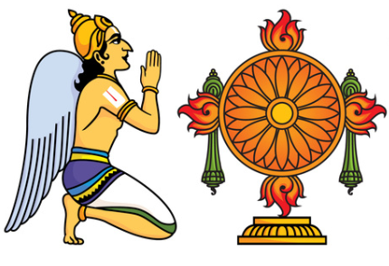
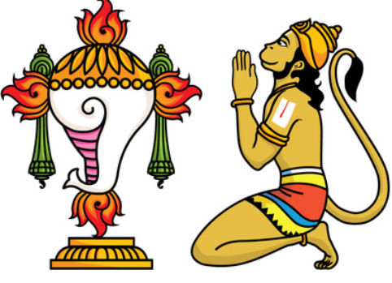
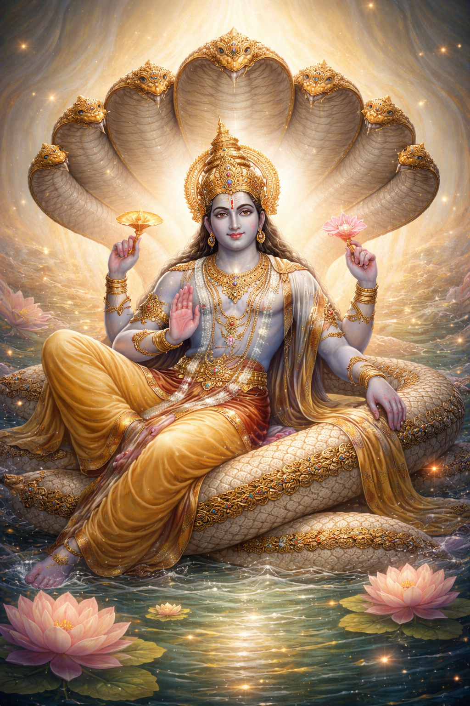

ॐ నమో నారాయణాయ
0 / 108
Chant Om Namo Narayanaya to begin...
With each chant, discover one of the 108 Divya Desams
Displayed: 0 / 108
Chant Om Namo Narayanaya



వైకుంఠ దర్శనం
వైకుంఠానికి స్వాగతం నా ప్రియ భక్తుడా.
నేను ఎల్లప్పుడూ నీతోనే ఉన్నాను.
నీవు నీ కర్తవ్యాన్ని నిష్ఠగా చేయి.
ఫలితాన్ని నాపై వదిలేయి.
నేను నీ సంరక్షణ బాధ్యత తీసుకుంటాను.
ఓం నమో నారాయణాయ
ఓం నమో నారాయణాయ
ఓం నమో నారాయణాయ
Chant Again